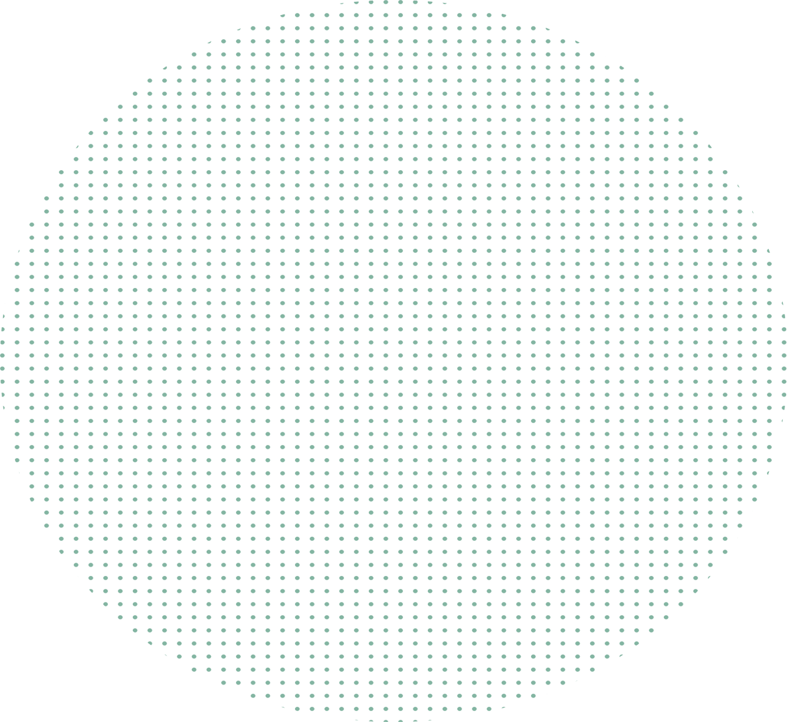
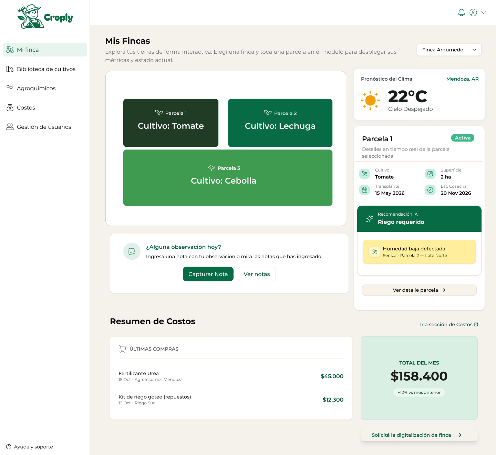
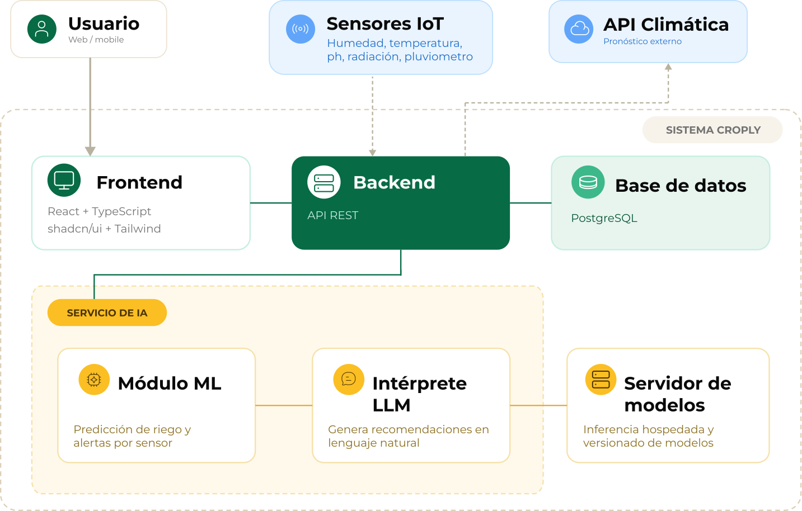
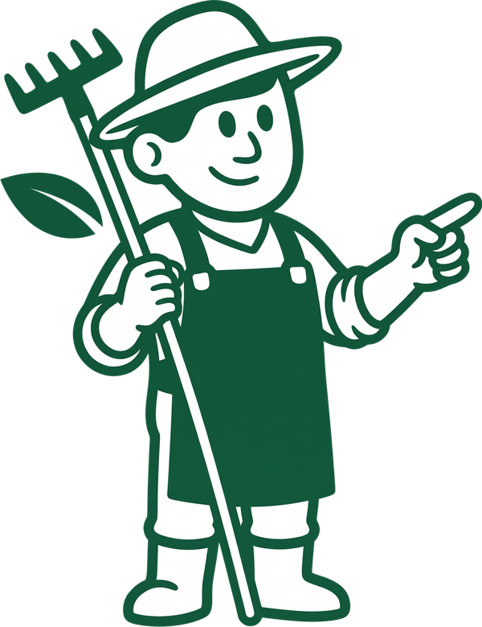
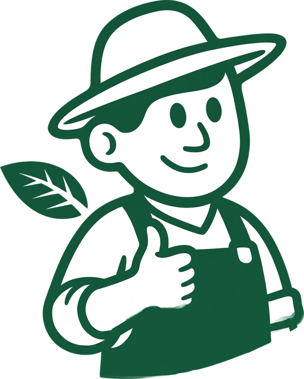
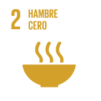
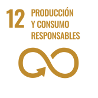

El conocimiento de cada cultivo vive en la experiencia de quien trabaja la finca y no queda registrado.

Sistema de gestión agrícola
Gestión agrícola inteligente para el productor de Mendoza
Croply reúne en un solo lugar las parcelas, los cultivos, las tareas y los costos de la finca, y suma pronóstico del clima y recomendaciones asistidas por inteligencia artificial.

El punto de partida
Lo que encontramos en el campo
Antes de diseñar el sistema, entrevistamos a quienes trabajan la tierra todos los días. Esto es lo que nos dijeron.
“Nos basamos en la experiencia y en observar el cultivo.”
“Si curas y llueve a las dos horas, pierdes el producto y tienes que volver a empezar.”
“La rentabilidad es baja, entonces muchos productores no pueden acceder a la tecnología.”
Del relevamiento al sistema
Las entrevistas y el análisis de herramientas existentes dejaron cuatro problemas recurrentes. Croply responde a cada uno.
Biblioteca de cultivos con fichas técnicas y calendarios que generan un plan de acción.
El clima obliga a reprogramar tareas, y un tratamiento mal ubicado puede significar perder el producto.
Pronóstico, alertas climáticas automáticas y tareas fáciles de reprogramar.
Los registros de memoria o en papel quedan incompletos y dificultan la trazabilidad.
Notas de campo, incluso sin conexión, cuaderno de agroquímicos y reportes en PDF.
Las herramientas disponibles suelen ser costosas o pensadas para grandes explotaciones.
Una plataforma accesible, pensada para pequeños y medianos productores, con seguimiento de costos.
Lo que construimos
Una sola plataforma, de la parcela a la decisión
Croply centraliza la gestión operativa y agronómica de la finca. Combina datos de sensores IoT, pronóstico del clima e inteligencia artificial para ofrecer alertas y recomendaciones adaptadas a cada cultivo y a su etapa.

Croply en números
- 0módulos del sistema
- 0historias de usuario
- 0pantallas diseñadas
- 0casos de prueba
Tecnologías utilizadas
- React
- TypeScript
- Tailwind CSS
- NestJS
- PostgreSQL
- Python
- MQTT
- Docker
- Figma
El sistema en acción
Un recorrido por Croply
Siete funcionalidades principales del sistema en funcionamiento.


Cómo llegamos hasta acá
Del problema al producto
Seis etapas, desde la idea inicial hasta el sistema final.
-
Etapa 1
La idea
Partimos de una pregunta: cómo ayudar al productor a decidir con información y no solo con intuición.
-
Etapa 2
Escuchar
Salimos a entender cómo se trabaja hoy: conversamos con quienes producen y analizamos las herramientas existentes.
-
Etapa 3
Definir
Convertimos lo aprendido en requisitos claros: qué debe hacer el sistema, para quién y hasta dónde llega, y comprobamos que fuera viable.
-
Etapa 4
Diseñar
Antes de programar, dibujamos el sistema: sus datos, sus pantallas y cómo se conectan sus partes.
-
Etapa 5
Construir
Desarrollamos Croply por etapas: una primera versión con las funciones principales y una segunda casi completa.
-
Etapa 6
Probar y entregar
Verificamos que todo funcione, documentamos el sistema y lo preparamos para su presentación: el producto final.

Compromiso
Objetivos de Desarrollo Sostenible

Hambre cero
Apoya la producción de pequeños y medianos productores, base de la alimentación local.

Producción y consumo responsables
Promueve un uso más eficiente del agua y de los insumos, con registro y trazabilidad.